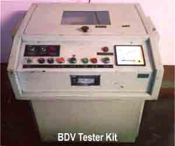
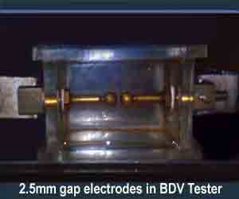
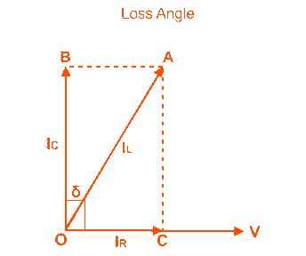

Transformer Insulating Oil and Types of Transformer Oil
• Types
• Properties
• Parameters
• Electrical Parameter
• Dielectric Strength
• Specific Resistance
• Dielectric Dissipation Factor of Tan Delta
• Chemical Parameters
• Water Content
• Acidity
• Physical Parameters
• Inter Facial Tension
• Flash Point
• Pour Point
• Viscosity
Introduction of Insulating Oil
Insulating oil in an electrical power transformer is commonly known as transformer oil. It is normally obtained by fractional distillation and subsequent treatment of crude petroleum. That is why this oil is also known as mineral insulating oil. Transformer oil serves mainly two purposes one it is liquid insulation in electrical power transformer and two it dissipates heat of the transformer e.i. acts as coolant. In addition to these, this oil serves other two purposes, it helps to preserve the core and winding as these are fully immersed inside oil and another important purpose of this oil is, it prevents direct contact of atmospheric oxygen with cellulose made paper insulation of windings, which is susceptible to oxidation.
Types of Transformer Oil
Generally there are two types of transformer Oil used in transformer,
- Paraffin based transformer oil
- Naphtha based transformer oil
Naphtha oil is more easily oxidized than Paraffin oil. But oxidation product i.e. sludge in the naphtha oil is more soluble than Paraffin oil. Thus sludge of naphtha based oil is not precipitated in bottom of the transformer. Hence it does not obstruct convection circulation of the oil, means it does not disturb the transformer cooling system. But in the case of Paraffin oil although oxidation rate is lower than that of Naphtha oil but the oxidation product or sludge is insoluble and precipitated at bottom of the tank and obstruct the transformer cooling system. Although Paraffin based oil has above mentioned disadvantage but still in our country it is generally used because of its easy availability. Another problem with paraffin based oil is its high pour point due to the wax content, but this does not effect its use due to warm climate condition of India.
Properties of Transformer Insulating Oil
Some specific parameters of insulating oil should be considered to determined the serviceability of that oil.
Parameters of Transformer Oil
The parameters of transformer oil are categorized as,
- Electrical parameters :– Dielectric strength, specific resistance, dielectric dissipation factor.
- Chemical parameter :- Water content, acidity, sludge content.
- Physical parameters :- Inter facial tension, viscosity, flash point, pour point.
Electrical Parameter of Transformer Oil
Dielectric Strength of Transformer Oil

Dielectric strength of transformer oil is also known as breakdown voltage of transformer oil or BDV of transformer oil. Break down voltage is measured by observing at what voltage, sparking strants between two electrods immerged in the oil, separated by specific gap. low value of BDV indicates presence of moisture content and conducting substances in the oil. For measuring BDV of transformer oil, portable BDV measuring kit is generally available at site. In this kit, oil is kept in a pot in which one pair of electrodes are fixed with a gap of 2.5 mm (in some kit it 4mm) between them.
Now slowly rising voltage is applied between the electrodes. Rate of rise of voltage is generally controlled at 2 KV/s and observe the voltage at which sparking starts between the electrodes.
That means at which voltage dielectric strength of transformer oil between the electrodes has been broken down.

Generally this measurement is taken 3 to 6 times in same sample of oil and the average value of these reading is taken. BDV is important and popular test of transformer oil, as it is primary indication of health of oil and it can be easily carried out at site.
Dry and clean oil gives BDV results, better than the oil with moisture content and other conducting impurities. Minimum breakdown voltage of transformer oil or dielectric strength of transformer oil at which this oil can safely be used in transformer, is considered as 30 KV.
Specific Resistance of Transformer Oil
This is another important property of transformer oil. This is measure of DC resistance between two opposite sides of one cm3 block of oil. Its unit is taken as ohm-cm at specific temperature. With increase in temperature the resistivity of oil decreases rapidly. Just after charging a transformer after long shut down, the temperature of the oil will be at ambient temperature and during full load the temperature will be very high and may go up to 90°C at over load condition. So resistivity of the insulating oil must be high at room temperature and also it should have good value at high temperature as well.
That is why specific resistance or resistivity of transformer oil should be measured at 27°C as well as 90°C.
Minimum standard specific resistance of transformer oil at 90°C is 35 × 1012 ohm–cm and at 27°C it is 1500 × 1012 ohm–cm.
Dielectric Dissipation Factor of Tan Delta of Transformer Oil
Dielectric dissipation factor is also known as loss factor or tan delta of transformer oil. When a insulating materials is placed between live part and grounded part of an electrical equipment, leakage electric current will flow. As insulating material is dielectric in nature the electric current through the insulation ideally leads the voltage by 90o. Here voltage means the instantaneous voltage between live part and ground of the equipment. But in reality no insulating materials are perfect dielectric in nature. Hence electric current through the insulator will lead the voltage with an angle little bit shorter than 90°. Tangent of the angle by which it is short of 90° is called dielectric dissipation factor or simply tan delta of transformer oil.
More clearly, the leakage electric current through an insulation does have two component one is capacitive or reactive and other one is resistive or active.
Again it is clear from above diagram, value of ′δ′ which is also known as loss angle,

is smaller, means resistive component of the electric current IR is smaller which indicates high resistive property of the insulating material. High resistive insulation is good insulator. Hence it is desirable to have loss angle as small as possible. So we should try to keep the value of tanδ as small as possible. High value of this tanδ is an indication of presence of contaminants in transformer oil.
Hence there is a clear relationship between tanδ and resistivity of insulating oil. If resistivity of the insulating oil is decreased, the value of tan-delta increases and vice verse. So both resistivity test and tan delta test of transformer oil are not normally required for same piece of insulator or insulating oil.
In one sentence it can be said that, tanδ is measure of imperfection of dielectric nature of insulation materials like oil.
Chemical Parameters of Transformer Oil
Water Content in Transformer Oil
Moisture or water content in transformer oil is highly undesirable as it affects adversely the dielectric properties of oil. The water content in oil also affects the paper insulation of the core and winding of transformer. Paper is highly hygroscopic in nature. Paper absorbs maximum amount of water from oil which affects paper insulation property as well as reduced its life. But in loaded transformer, oil becomes hotter, hence the solubility of water in oil increases as a result the paper releases water and increase the water content in transformer oil. Thus the temperature of the oil at the time of taking sample for test is very important. During oxidation acid are formed in the oil the acids give rise the solubility of water in the oil. Acid coupled with water further decompose the oil forming more acid and water. This rate of degradation of oil increases. The water content in oil is measured as pm(parts per million unit).
Water content in oil is allowed up to 50 ppm as recommended by IS–335(1993). The accurate measurement of water content at such low levels requires very sophisticated instrument like Coulometric Karl Fisher Titrator .
Acidity of Transformer Oil
Acidity of transformer oil, is harmful property. If oil becomes acidic, water content in the oil becomes more soluble to the the oil. Acidity of oil deteriorates the insulation property of paper insulation of winding. Acidity accelerates thee oxidation process in the oil. Acid also includes rusting of iron in presence of moisture. The acidity of transformer oil is measure of its acidic constituents of contaminants. Acidity of oil is express in mg of KOH required to neutralize the acid present in a gram of oil. This is also known as neutralization number.
Physical Parameters of Transformer Oil
Inter Facial Tension of Transformer Oil
Inter facial tension between the water and oil interface is the way to measure molecular attractive force between water and oil. It is measured in Dyne/cm or mili-Newton/meter. Inter facial tension is exactly useful for determining the presence of polar contaminants and oil decay products. Good new oil generally exhibits high inter facial tension. oil oxidation contaminants lower the IFT.
Flash Point of Transformer Oil
Flash point of transformer oil is the temperature at which oil gives enough vapors to produce a flammable mixture with air. This mixture gives momentary flash on application of flame under standard condition. Flash point is important because it specifies the chances of fire hazard in the transformer. So it is desirable to have very high flash point of transformer oil. In general it is more than 140°(>10°).
Pour Point of Transformer Oil
It is the minimum temperature at which oil just start to flow under standard test condition. Pour point of transformer oil is an important property mainly at the places where climate is extremely cold. If the oil temperature falls bellow the pour point, transformer oil stops convection flowing and obstruct cooling in transformer. Paraffin based oil has higher value of pour point, compared to Naphtha based oil, but in India like country, it does not effect the use of Paraffin oil due tits warm climate condition. Pour Point of transformer oil mainly depends upon wax content in the oil. As Paraffin based oil has more wax content, it has higher pour point.
Viscosity of Transformer Oil
In few wards, viscosity of transformer oil can be said that viscosity is the resistance of flow, at normal condition. Obviously resistance to flow of transformer oil means obstruction of convection circulation of oil inside the transformer. A good oil should have low viscosity so that it offers less resistance to the convectional flow of oil thereby not affecting the cooling of transformer. Low viscosity of transformer oil is essential, but it is equally important that, the viscosity of oil should increase as less as possible with decrease in temperature. Every liquid becomes more viscous if temperature decreases.
 by
by